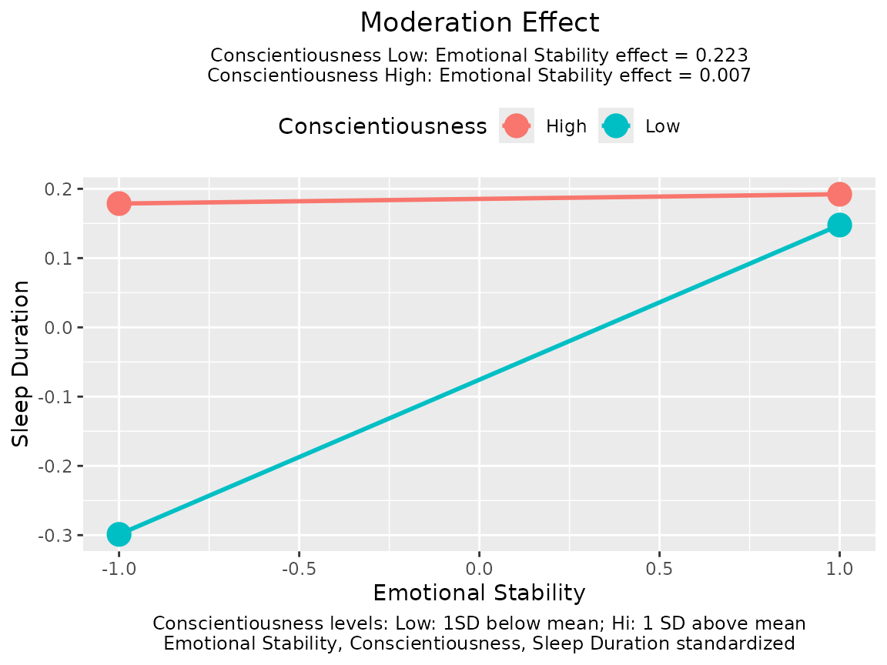

Standardized Moderation Effect by std_selected()
Shu Fai Cheung and David Weng Ngai Vong
2023-06-21
Source:vignettes/moderation.Rmd
moderation.RmdPurpose
This document demonstrates how to use std_selected()
from the stdmod package to compute the correct standardized
solution of moderated regression. More about this package can be found
in vignette("stdmod", package = "stdmod") or at https://sfcheung.github.io/stdmod/.
Load the Dataset
data(sleep_emo_con)
head(sleep_emo_con, 3)
#> case_id sleep_duration conscientiousness emotional_stability age gender
#> 1 1 6 3.6 3.6 20 female
#> 2 2 4 3.8 2.4 20 female
#> 3 3 7 4.3 2.7 20 femaleThis data set has 500 cases of data. The variables are sleep duration, age, gender, and the scores from two personality scales, emotional stability and conscientiousness of the IPIP Big Five markers. Please refer to (citation to be added) for the detail of the data set.
The names of some variables are shortened for readability:
Moderated Regression
Suppose we are interested in predicting sleep duration by emotional stability, after controlling for gender and age. However, we suspect that the effect of emotional stability, if any, may be moderated by conscientiousness. Therefore, we conduct a moderated regression as follow:
lm_out <- lm(sleep_duration ~ age + gender + emot * cons,
data = sleep_emo_con)
summary(lm_out)
#>
#> Call:
#> lm(formula = sleep_duration ~ age + gender + emot * cons, data = sleep_emo_con)
#>
#> Residuals:
#> Min 1Q Median 3Q Max
#> -6.0841 -0.7882 0.0089 0.9440 6.1189
#>
#> Coefficients:
#> Estimate Std. Error t value Pr(>|t|)
#> (Intercept) 1.85154 1.35224 1.369 0.17155
#> age 0.01789 0.02133 0.838 0.40221
#> gendermale -0.26127 0.16579 -1.576 0.11570
#> emot 1.32151 0.45039 2.934 0.00350 **
#> cons 1.20385 0.37062 3.248 0.00124 **
#> emot:cons -0.33140 0.13273 -2.497 0.01286 *
#> ---
#> Signif. codes: 0 '***' 0.001 '**' 0.01 '*' 0.05 '.' 0.1 ' ' 1
#>
#> Residual standard error: 1.384 on 494 degrees of freedom
#> Multiple R-squared: 0.0548, Adjusted R-squared: 0.04523
#> F-statistic: 5.728 on 5 and 494 DF, p-value: 3.768e-05
plotmod(lm_out,
x = "emot",
w = "cons",
x_label = "Emotional Stability",
w_label = "Conscientiousness",
y_label = "Sleep Duration")
The results show that conscientiousness significantly moderates the effect of emotional stability on sleep duration.
Standardized Moderation Effect
To get the correct standardized solution of the moderated regression,
with the product term formed after standardization, we can use
std_selected().
The first argument is the regression output from
lm().The argument
to_centerspecifies variables to be mean centered.The argument
to_scalespecifies variables to be rescaled by their standard deviations after centering.In
stdmod0.2.6.3, the argumentto_standardizewas introduced as a shortcut. Listing a variable into_standardizeis equivalent to listing it into_centerandto_scale.
If we want to standardize or mean center all variables, we can use
~ . as a shortcut. Note that std_selected()
will automatically skip categorical variables (i.e., factors or string
variables in the regression model of lm()).
lm_stdall <- std_selected(lm_out,
to_standardize = ~ .)Before 0.2.6.3, to standardize all variables except for categorical
variables, we need to use both to_center = ~ . and
to_scale = ~ .. Since 0.2.6.3, we can just use
to_standardize = ~ ., as shown above. If
to_standardize = ~ . does not work, just use
to_center and to_scale as shown below:
lm_stdall <- std_selected(lm_out,
to_center = ~ .,
to_scale = ~ .)A summary of the results of std_selected() can be
generated by summary():
summary(lm_stdall)
#>
#> Call to std_selected():
#> std_selected(lm_out = lm_out, to_standardize = ~.)
#>
#> Selected variable(s) are centered by mean and/or scaled by SD
#> - Variable(s) centered: sleep_duration age gender emot cons
#> - Variable(s) scaled: sleep_duration age gender emot cons
#>
#> centered_by scaled_by Note
#> sleep_duration 6.776333 1.4168291 Standardized (mean = 0, SD = 1)
#> age 22.274000 2.9407857 Standardized (mean = 0, SD = 1)
#> gender NA NA Nonnumeric
#> emot 2.713200 0.7629613 Standardized (mean = 0, SD = 1)
#> cons 3.343200 0.6068198 Standardized (mean = 0, SD = 1)
#>
#> Note:
#> - Categorical variables will not be centered or scaled even if
#> requested.
#>
#> Call:
#> lm(formula = sleep_duration ~ age + gender + emot * cons, data = dat_mod)
#>
#> Residuals:
#> Min 1Q Median 3Q Max
#> -4.2941 -0.5563 0.0063 0.6663 4.3187
#>
#> Coefficients:
#> Estimate Std. Error t value Pr(>|t|)
#> (Intercept) 0.05492 0.04883 1.125 0.26124
#> age 0.03712 0.04428 0.838 0.40221
#> gendermale -0.18440 0.11702 -1.576 0.11570
#> emot 0.11501 0.04493 2.560 0.01076 *
#> cons 0.13050 0.04517 2.889 0.00403 **
#> emot:cons -0.10829 0.04337 -2.497 0.01286 *
#> ---
#> Signif. codes: 0 '***' 0.001 '**' 0.01 '*' 0.05 '.' 0.1 ' ' 1
#>
#> Residual standard error: 0.9771 on 494 degrees of freedom
#> Multiple R-squared: 0.0548, Adjusted R-squared: 0.04523
#> F-statistic: 5.728 on 5 and 494 DF, p-value: 3.768e-05
#>
#> Note:
#> - Estimates and their statistics are based on the data after
#> mean-centering, scaling, or standardization.The coefficient in this solution, -0.10829, can be interpreted as the change in the standardized effect of emotional stability for each one standard deviation increase of conscientiousness. Naturally, this can be called the standardized moderation effect of conscientiousness (Cheung, Cheung, Lau, Hui, & Vong, 2022).
The output of std_selected() can be passed to other
functions that accept the output of lm(). This package also
has a simple function, plotmod(), for generating a typical
plot of the moderation effect:
plotmod(lm_stdall,
x = "emot",
w = "cons",
x_label = "Emotional Stability",
w_label = "Conscientiousness",
y_label = "Sleep Duration")
The function plotmod() also prints the conditional
effects of the predictor (focal variable), emotional stability in this
example.
The Common (Incorrect) Standardized Solution
For comparison, this is the results of standardizing all variables, including the product term and the categorical variable.
library(lm.beta) # For generating the typical standardized solution
packageVersion("lm.beta")
#> [1] '1.7.2'
lm_beta <- lm.beta(lm_out)
summary(lm_beta)
#>
#> Call:
#> lm(formula = sleep_duration ~ age + gender + emot * cons, data = sleep_emo_con)
#>
#> Residuals:
#> Min 1Q Median 3Q Max
#> -6.0841 -0.7882 0.0089 0.9440 6.1189
#>
#> Coefficients:
#> Estimate Standardized Std. Error t value Pr(>|t|)
#> (Intercept) 1.85154 NA 1.35224 1.369 0.17155
#> age 0.01789 0.03712 0.02133 0.838 0.40221
#> gendermale -0.26127 -0.06934 0.16579 -1.576 0.11570
#> emot 1.32151 0.71163 0.45039 2.934 0.00350 **
#> cons 1.20385 0.51560 0.37062 3.248 0.00124 **
#> emot:cons -0.33140 -0.78201 0.13273 -2.497 0.01286 *
#> ---
#> Signif. codes: 0 '***' 0.001 '**' 0.01 '*' 0.05 '.' 0.1 ' ' 1
#>
#> Residual standard error: 1.384 on 494 degrees of freedom
#> Multiple R-squared: 0.0548, Adjusted R-squared: 0.04523
#> F-statistic: 5.728 on 5 and 494 DF, p-value: 3.768e-05The coefficient of the standardized product term is -0.78201, which cannot be interpreted as the change in the standardized effect of emotional stability for each one standard deviation increase of conscientiousness because the product term is standardized and can no longer be interpreted as the product of two variables in the model.
Improved Confidence Intervals
It has been shown (e.g., Yuan & Chan,
2011) that the standard errors of standardized regression
coefficients computed just by standardizing the variables are biased,
and consequently the confidence intervals are also invalid. The function
std_selected_boot() is a wrapper of
std_selected() that also forms the confidence interval of
the regression coefficients when standardizing is conducted, using
nonparametric bootstrapping as suggested by Cheung, Cheung, Lau, Hui,
and Vong (2022).
We use the same example above that standardizes all variables except
for categorical variables to illustrate this function. The argument
nboot specifies the number of nonparametric bootstrap
samples. The level of confidence is set by conf. The
default is .95, denoting 95% confidence intervals. If this is the
desired level, this argument can be omitted.
set.seed(649017)
lm_xwy_std_ci <- std_selected_boot(lm_out,
to_standardize = ~ .,
nboot = 2000)If the default options are acceptable, the only additional argument
is nboot.
summary(lm_xwy_std_ci)
#>
#> Call to std_selected_boot():
#> std_selected_boot(lm_out = lm_out, to_scale = ~., to_center = ~.,
#> nboot = 2000)
#>
#> Selected variable(s) are centered by mean and/or scaled by SD
#> - Variable(s) centered: sleep_duration age gender emot cons
#> - Variable(s) scaled: sleep_duration age gender emot cons
#>
#> centered_by scaled_by Note
#> sleep_duration 6.776333 1.4168291 Standardized (mean = 0, SD = 1)
#> age 22.274000 2.9407857 Standardized (mean = 0, SD = 1)
#> gender NA NA Nonnumeric
#> emot 2.713200 0.7629613 Standardized (mean = 0, SD = 1)
#> cons 3.343200 0.6068198 Standardized (mean = 0, SD = 1)
#>
#> Note:
#> - Categorical variables will not be centered or scaled even if
#> requested.
#> - Nonparametric bootstrapping 95% confidence intervals computed.
#> - The number of bootstrap samples is 2000.
#>
#> Call:
#> lm(formula = sleep_duration ~ age + gender + emot * cons, data = dat_mod)
#>
#> Residuals:
#> Min 1Q Median 3Q Max
#> -4.2941 -0.5563 0.0063 0.6663 4.3187
#>
#> Coefficients:
#> Estimate CI Lower CI Upper Std. Error t value Pr(>|t|)
#> (Intercept) 0.054919 0.002968 0.104340 0.048827 1.125 0.26124
#> age 0.037125 -0.036253 0.103590 0.044280 0.838 0.40221
#> gendermale -0.184402 -0.438855 0.087551 0.117016 -1.576 0.11570
#> emot 0.115014 0.023642 0.202438 0.044927 2.560 0.01076 *
#> cons 0.130502 0.032359 0.224223 0.045167 2.889 0.00403 **
#> emot:cons -0.108292 -0.203990 -0.009746 0.043374 -2.497 0.01286 *
#> ---
#> Signif. codes: 0 '***' 0.001 '**' 0.01 '*' 0.05 '.' 0.1 ' ' 1
#>
#> Residual standard error: 0.9771 on 494 degrees of freedom
#> Multiple R-squared: 0.0548, Adjusted R-squared: 0.04523
#> F-statistic: 5.728 on 5 and 494 DF, p-value: 3.768e-05
#>
#> Note:
#> - Estimates and their statistics are based on the data after
#> mean-centering, scaling, or standardization.
#> - [CI Lower, CI Upper] are bootstrap percentile confidence intervals.
#> - Std. Error are not bootstrap SEs.The standardized moderation effect is -0.1083, and the 95% nonparametric bootstrap confidence interval is -0.2040 to -0.0097.
Note: As a side product, the nonparametric bootstrap percentile confidence of the other coefficients are also reported. They can be used for other variables that are standardized in the same model, whether they are involved in the moderation or not.
Further Information
vignette("plotmod", package = "stdmod") illustrates how
to use plotmod() to plot a moderation effect. If variables
are standardized by std_selected(), plotmod()
can indicate this in the plot.
vignette("cond_effect", package = "stdmod") illustrates
how to use cond_effect() to compute conditional effects,
the effect of a predictor (focal variable) for selected levels of the
moderator. cond_effect() supports outputs from
std_selected().
Reference(s)
Cheung, S. F., Cheung, S.-H., Lau, E. Y. Y., Hui, C. H., & Vong, W. N. (2022) Improving an old way to measure moderation effect in standardized units. Health Psychology, 41(7), 502-505. https://doi.org/10.1037/hea0001188.
Yuan, K.-H., & Chan, W. (2011). Biases and standard errors of standardized regression coefficients. Psychometrika, 76(4), 670-690. https://doi.org/10.1007/s11336-011-9224-6